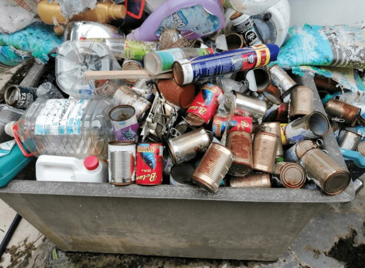
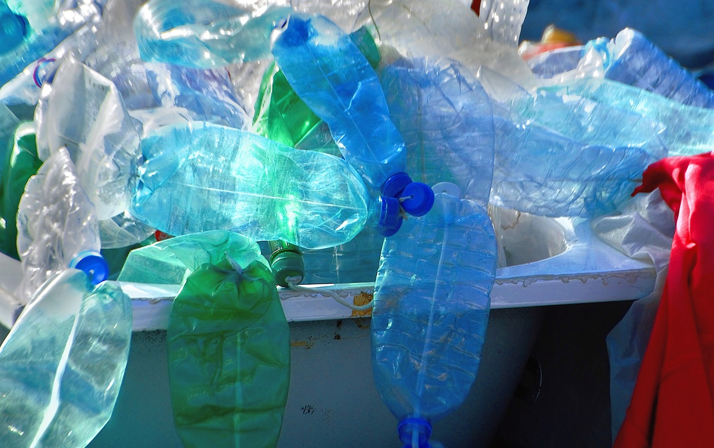

Mesmo com mais de 30 EcoPontos espalhados pela cidade, 66,7% dos entrevistados pelo jornal da Guarulhos Sustentável (?) afirmam não conhecer/não saber onde fica nenhum EcoPonto.
Nossos Serviços
A Guarulhos Sustentável (?), além de expor, por meio de notícias a falta de sustentabilidade no Município Guarulhense, também presta serviços para mudar essa realidade, projetos para deixar a cidade mais limpa, gerar empregos e conscientizar a população, para que haja esperança de uma cidade e cidadãos que se comprometem com o meio ambiente e entendem sua responsabilidade coletiva, construindo um presente e, principalmente, um futuro melhor para todos.
° Coleta Seletiva
O que é a coleta seletiva?
É um mecanismo de recolhimento de resíduos (ou seja, lixo), onde eles são classificados
de acordo com sua origem e depositados em recipientes indicados por diferentes cores.
Ela é extremamente importante tanto pela sua contribuição à sustentabilidade urbana como pela geração de renda,
de cidadania e pela economia de recursos naturais que proporciona, ou seja,
coletar e separar de forma correta os resíduos produzidos, beneficiam a natureza, a população e a economia.
Sendo assim, A Guarulhos Sustentável (?) realiza a coleta desses materiais, com diversos pontos de coleta por toda a cidade, além de realizar a coleta diretamente em bairros periféricos e/ou rurais.
Caso tenha se interessado em aplicar a coleta em sua comunidade, entre em contato conosco!
° Reciclagem dos materiais coletados
Depois de coletados os resíduos, eles são levados para um centro de tratamento, onde são separados segundo sua natureza, ou seja, seu "tipo de lixo". Depois, são processados, mas esse tratamento depende do tipo de material (o tratamento de um metal é diferente de algo de papel, por exemplo). Todo esse tratamento, visa reinserir na indústria materiais com qualidade, contribuindo assim para o consumo consciente e barateamento de matéria prima, além de evitarmos riscos e danos à saúde pública com uma destinação final eficiente (coisa que é um grande prolema nos bairros periféricos de Guarulhos).
° Palestras e eventos de promoção do conhecimento:
Além dos serviços de coleta e reciclagem, a Guarulhos Sustentável (?) também promove palestras e eventos para aumentar a conscientização sobre o meio ambiente e sua relação com a cidade, para todos os gostos e faixas etárias.

° Veiculação de informações pertinentes:
Criticar e pressionar as autoridades e a sociedade é um dos objetivos do Jornal Guarulhos Sustentável (?), colocando em evidência aquilo que está sendo ignorado e que precisa ser mudado. O jornal divulga diversas notícias, boas ou ruins, sobre a sustentabilidade no município, afim de conscientizar cada vez mais a sociedade acerca da sua falta de zelo com a natureza.